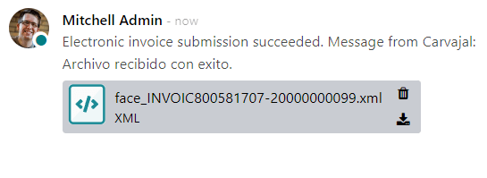
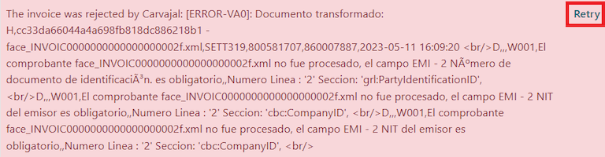
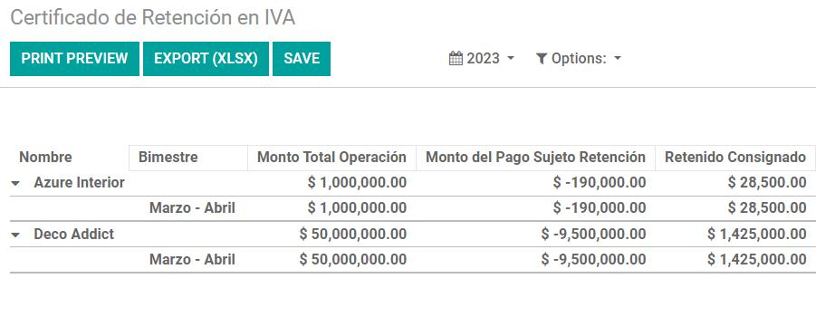

Colombia¶
El paquete de localización colombiana de Odoo incluye funciones contables, fiscales y legales para las bases de datos de Colombia, como el plan de cuentas, impuestos y facturación electrónica.
De igual manera, también contamos con una serie de videos sobre el tema. Estos videos lo acompañan desde el primer paso hasta las configuraciones, flujos de trabajo y casos de uso específicos.
Ver también
Configuración¶
Instalación de módulos¶
Instale los siguientes módulos para obtener todas las funciones de la localización de Colombia:
Nombre |
Nombre técnico |
Descripción |
|---|---|---|
Colombia - Contabilidad |
|
Es el paquete de localización fiscal predeterminado. Este módulo agrega las funciones contables básicas para la localización colombiana, como el plan de cuentas, impuestos, retenciones y tipo de documento de identidad. |
Colombia - Reportes contables |
|
Incluye los reportes contables para enviar certificaciones a los proveedores por retenciones aplicadas. |
Facturación electrónica para Colombia con Carvajal |
|
Este módulo incluye las funciones necesarias para la integración con Carvajal. Además genera facturas electrónicas y documentos soporte relacionados a las facturas de proveedor según las regulaciones de la DIAN. |
Colombia - Punto de venta |
|
Incluye el recibo del punto de venta para la localización colombiana. |
Nota
Odoo instalará ciertos módulos de forma automática si selecciona Colombia para la localización fiscal de una empresa.
Configuración de la empresa¶
Para configurar la información de su empresa, vaya a la aplicación y busque el nombre de su empresa.
También puede activar el modo de desarrollador, ir a , editar el formulario de contacto y configurar la siguiente información:
Nombre de la empresa.
Dirección: están incluidos los datos de ciudad, departamento y código postal.
Número de identificación: Selecione el tipo de identificación (
NIT,Cédula de ciudadanía,Registro civil, etc.). Cuando el tipo de identificación esNIT, el Número de identificación debe tener el dígito de verificación al final del ID precedido por un guion (-).
Después, configure la Información fiscal en la pestaña Venta y compra:
Obligaciones y Responsabilidades: seleccione la responsabilidad fiscal de la empresa (O-13 Gran Contribuyente, O-15 Autorretenedor, O-23 Agente de retención IVA, O-47 Régimen simple de tributación o R-99-PN No aplica).
Gran Contribuyente: debe seleccionar esta opción si la empresa es un gran contribuyente.
Régimen fiscal: seleccione el nombre tributario para la empresa (
IVA,INC,IVA e INCoNo aplica).Nombre comercial: si la empresa usa un nombre comercial específico que necesita mostrarse en la factura.
Configuración de las credenciales de Carvajal¶
Ya que todos los módulos estén instalados debe configurar las credenciales de usuario para poder conectarse con el servicio web de Carvajal. Vaya a , diríjase a la sección Facturación electrónica de Colombia y complete la información de configuración necesaria que Carvajal le proporcionó:
Usuario y contraseña: usuario y contraseña (proporcionados por Carvajal) para la empresa.
Registro de la empresa: número NIT de la empresa sin el código de verificación.
ID de cuenta: número de NIT de la empresa seguido de
_01.Código de plantilla de Colombia: seleccione una de las dos plantillas disponibles (
CGEN03oCGNE04). Se utilizará en el formato PDF de la factura electrónica.
Seleccione la casilla Modo de prueba para conectarse al entorno de prueba de Carvajal.
Una vez que Odoo y Carvajal estén completamente configurados y listos para producción, desactive la casilla Modo de prueba para utilizar la base de datos de producción.

Importante
El modo de prueba debe utilizarse solo en bases de datos duplicadas, no en el entorno de producción.
Configuración de los datos del reporte¶
Es posible definir los datos del reporte para la sección fiscal y la información bancaria del PDF como parte de la información configurable que se envía en el XML.
Vaya a y diríjase a la sección Facturación electrónica de Colombia. Allí encontrará los campos de Configuración de reportes y podrá configurar la información del encabezado para cada tipo de reporte.
Gran Contribuyente
Tipo de régimen
Retenedores de IVA
Autorretenedores
Resolución aplicable
Actividad económica
Información bancaria
Configuración de los datos maestros¶
Contacto¶
Si desea crear contactos vaya a la aplicación y haga clic en el botón Nuevo.
Establezca un nombre para el contacto y seleccione el tipo de contacto con los botones de opción, puede elegir entre individual o empresa.
Complete la dirección con los campos Ciudad, Estado y código postal, después complete la información fiscal y de identificación.
Información de identificación¶
Los tipos de identificación definidos por la DIAN están disponibles en el formulario de contacto como parte de la localización colombiana. Los contactos colombianos deben tener establecido su número de identificación (NIT) y tipo de documento.
Truco
Cuando el tipo de documento es NIT, debe configurar el número de identificación en Odoo, incluyendo el dígito de verificación al final del ID, precedido por un guion (`-`).
Información fiscal¶
Se incluyen los códigos de responsabilidad del contacto (sección 53 del documento RUT) como parte del módulo de facturación electrónica, pues esto lo solicita la DIAN.
Puede acceder a estos campos desde .
Obligaciones y Responsabilidades: seleccione la responsabilidad fiscal de la empresa (O-13 Gran Contribuyente, O-15 Autorretenedor, O-23 Agente de retención IVA, O-47 Régimen simple de tributación o R-99-PN No aplica).
Gran Contribuyente: debe seleccionar esta opción si la empresa es un gran contribuyente.
Régimen fiscal: seleccione el nombre tributario para la empresa (
IVA,INC,IVA e INCoNo aplica).Nombre comercial: si la empresa usa un nombre comercial específico que necesita mostrarse en la factura.
Productos¶
Para gestionar los productos vaya a y luego haga clic en uno.
Cuando se agrega información general en el formulario del producto, es necesario que se configure ya sea la categoría UNSPSC (pestaña Contabilidad) o la referencia interna (pestaña Información general). Asegúrese de guardar el producto una vez configurado.
Impuestos¶
Si desea crear o modificar impuestos, vaya a y seleccione el impuesto relacionado.
Si las transacciones de ventas incluyen productos con impuestos, debe configurar el campo tipo de valor, en la pestaña opciones avanzadas, por impuesto. También se incluyen los tipos de impuestos de retención (ICA, IVA, fuente). Esta configuración se utiliza para mostrar correctamente los impuestos en el PDF de la factura.
Diarios de ventas¶
Una vez que la DIAN haya asignado la secuencia oficial y el prefijo para la resolución de la facturación electrónica, deberá actualizar los diarios de venta que estén relacionados a sus documentos de facturación en Odoo. Para hacerlo, vaya a y seleccione un diario de ventas existente o cree uno con el botón Nuevo.
En el formulario del diario de ventas, ingrese el Nombre del diario, Tipo y configure un Código corto en la pestaña de Asientos de diario. Después, configure los siguientes datos en la pestaña Ajustes avanzados:
Facturación electrónica: habilite UBL 2.1 (Colombia).
Resolución de facturación: el número de resolución que emitió el DIAN para la empresa.
Fecha de resolución: la fecha efectiva inicial de la resolución.
Fecha de finalización de la resolución: la fecha de finalización de la validez de la resolución.
Rango de numeración (mínimo): el primer número de factura autorizado.
Rango de numeración (máximo): el último número de factura autorizado.
Nota
La secuencia y la resolución del diario debe coincidir con lo que se configuró en Carvajal y en la DIAN.
Secuencia de facturación¶
La secuencia y prefijo de la factura debe configurarse de manera correcta cuando se cree el primer documento.
Nota
Odoo asignará un prefijo y una secuencia de manera automática a las siguientes facturas.
Diarios de compra¶
Una vez que la DIAN asignó la secuencia oficial y el prefijo para el documento soporte relacionado con las facturas de los proveedores, debe actualizar los diarios de compra relacionados con sus documentos soporte en Odoo. El proceso es similar a la configuración de los diarios de ventas.
Plan de cuentas¶
El plan de cuentas se instala de forma predeterminada como parte del módulo de localización. Las cuentas se asignan de forma automática a los impuestos y las cuentas predeterminadas por pagar y por cobrar. El plan de cuentas para Colombia se basa en el PUC (Plan Único de Cuentas).
Flujos de trabajo principales¶
Facturas electrónicas¶
A continuación verá un desglose del flujo de trabajo principal para facturas electrónicas con la localización colombiana:
El remitente crea una factura.
El emisor de la factura genera un archivo XML.
El emisor de la factura electrónica crea un CUFE (Código Único de Factura Electrónica) con la firma electrónica.
El emisor de la factura electrónica envía una notificación a la DIAN.
DIAN valida la factura.
DIAN acepta o rechaza la factura.
El emisor de la factura electrónica genera el PDF de la factura con un código QR.
El emisor de la factura electrónica envía la factura al adquirente.
El adquirente envía una confirmación de recibo y acepta o rechaza la factura.
El emisor descarga un :archivo:`.zip` con el PDF y XML.
Creación de facturas¶
Nota
El flujo de trabajo funcional previo a la validación de la factura no modifica los principales cambios introducidos con la factura electrónica.
Las facturas electrónicas se generan y envían tanto a la DIAN como al cliente mediante la integración del servicio web de Carvajal. Estos documentos se pueden crear desde su orden de venta o de forma manual. Para crear una factura nueva, vaya a y seleccione Crear. En el formulario de factura configure los siguientes campos:
Cliente: la información del cliente.
Diario: el diario que se utiliza para las facturas electrónicas.
Tipo de factura electrónica: seleccione el tipo de documento. La selección predeterminada es Factura de venta.
Líneas de la factura: especifique los productos con los impuestos correctos.
Al terminar, haga clic en confirmar.
Validación de la factura¶
Una vez que se confirma la factura, se creará un archivo XML que se enviará automáticamente a Carvajal. Después, el servicio de facturación electrónica UBL 2.1 (Colombia) procesará la factura de forma asíncrona. También podrá ver el archivo en el chatter.
El campo Nombre de la factura electrónica se mostrará en la pestaña Documentos EDI con el nombre del archivo XML. Además, el campo Estado de la factura electrónica se mostrará con el valor inicial Para enviar. Si desea procesar la factura de forma manual, haga clic en el botón Procesar ahora.
Recepción de XML legal y PDF¶
El proveedor de factura electrónica (Carvajal) recibirá el archivo XML y validará su estructura e información.
Después de validar la factura electrónica, se procederá a generar un XML válido que incluirá una firma digital y un código único (CUFE), también se generará una factura en PDF que incluirá un código QR y el CUFE. Por último, si todo es correcto el valor del campo Factura Electrónica pasará a Enviado.
Podrá descargar y ver en el chatter de la factura un .zip con la factura electrónica legal en formato XML y la factura en formato PDF:

El estado de la factura electrónica cambia a aceptado.
Notas de crédito¶
El proceso para las notas de crédito es el mismo que para las facturas. Para crear una nota de crédito con referencia a una factura, vaya a . En la factura, haga clic en Añadir nota de crédito y complete la siguiente información:
Método de crédito: seleccione el método de crédito.
Reembolso parcial: utilice esta opción cuando se trate de un importe parcial.
Reembolso completo: utilice esta opción cuando se trate de un importe total.
Reembolso completo y nuevo borrador de factura: utilice esta opción si la nota de crédito se autovalida y concilia con la factura. La factura original se duplica como un nuevo borrador.
Motivo: escriba el motivo de la nota de crédito.
Fecha de reversión: indique si desea una fecha específica para la nota de crédito o si se usará la fecha del asiento.
Utilizar diario específico: seleccione el diario a usar para su nota de crédito o déjelo vacío si desea utilizar el mismo diario que la factura original.
Fecha de reembolso: si eligió la opción fecha específica, seleccione la fecha para el reembolso.
Una vez revisado, haga clic en el botón Revertir.
Notas de débito¶
El proceso para las notas de débito es similar al de las notas de crédito. Para crear una nota de débito con referencia a una factura, vaya a . En la factura, haga clic en el botón Añadir nota de cargo e ingrese la siguiente información:
Motivo: escriba el motivo de la nota de débito.
Fecha de la nota de débito: seleccione las opciones específicas.
Copiar líneas: seleccione esta opción si necesita registrar una nota de débito con las mismas líneas de la factura.
Utilizar diario específico: seleccione el punto de impresión para su nota de débito, o déjelo vacío si desea utilizar el mismo diario que la factura original.
Al finalizar, haga clic en crear nota de débito.
Documento soporte para las facturas de proveedor¶
Una vez que haya configurado los datos maestros, las credenciales y el diario de compras relacionados con las facturas de proveedores, puede empezar a utilizar los documentos soporte.
Puede crear los documentos soporte para las facturas de proveedor desde las órdenes de compra o de forma manual. Vaya a y complete los siguientes datos:
Proveedor: complete la información del proveedor.
Fecha de factura: seleccione la fecha de la factura.
Diarios: seleccione el diario para los documentos soporte relacionados a las facturas de proveedor.
Líneas de factura: especifique los productos con los impuestos correspondientes.
Una vez revisado, haga clic en el botón confirmar. Después de confirmar se creará un archivo XML que se enviará de forma automática a Carvajal.
Errores comunes¶
Durante la validación de XML, los errores más comunes suelen estar relacionados con falta de datos maestros (NIF del contacto, Dirección, Productos, Impuestos). En estos casos, se mostrará un mensaje de error en el chatter después de actualizar el estado de la factura electrónica.
Después de corregir los datos maestros es posible volver a procesar el XML con los nuevos datos y enviar la versión actualizada si usa el botón Reintentar
Reportes financieros¶
Certificado de retención en ICA¶
Este reporte es una certificación para los proveedores por las retenciones efectuadas por concepto del impuesto de Industria y Comercio colombiano (ICA). El reporte se encuentra en .

Certificado de retención en IVA¶
Este reporte emite un certificado sobre el monto retenido a los proveedores por concepto de retención de IVA. El reporte se encuentra en .
Certificado de retención en la fuente¶
Este certificado se emite a los partners por las retenciones de impuestos que han efectuado. El reporte se encuentra en .